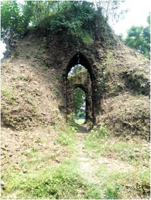

মন্দিরগুলো নির্মিত হয়েছিল ১৫৭৭-১৫৯৫ খ্রিস্টাব্দের মধ্যে। শ্যামনগর বাসস্ট্যান্ড থেকে প্রায় দুই কিলোমিটার পশ্চিমে যমুনা নদীর পশ্চিম পারে গোপালপুর ঘোষপাড়ায় এই মন্দির অবস্থিত।
এখানে মোট চারটি মন্দিরের মধ্যে একটিই মাটির স্তুপের মতো ভেঙ্গেচুরে ছাদবিহীন দাঁড়িয়ে আছে জঙ্গলের মধ্যে। রাজা প্রতাপাদিত্য উড়িষ্যা বিজয়ের সময় বিগ্রহটি এনেছিলেন এবং তাঁর কাকা রাজা বসন্ত রায় এ মন্দির প্রতিষ্ঠা করেছিলেন।
মন্দিরের দেয়ালগুলোতে বিভিন্ন প্রকার দেবদেবীর ছবি আঁকা ছিল। অন্য তিনটি মন্দিরের ধ্বংসস্তুপ এখনো বর্তমান। এর দক্ষিণ পাশে ১০০ বিঘা জমির একটি দিঘি আছে রাজা বসন্ত রায়ে কীর্তি হিসেবে।